| Nintendo Promotional Videos | 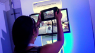 |
![Nintendo Show 3D: PAX Prime [Event Coverage]](img/thumbnails/pax.png) |
||
| Nintendo Originals | 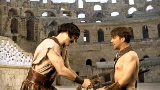 | 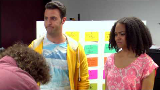 | 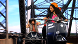 | 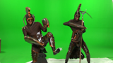 |
| Nintendo Gamecasts | 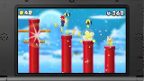 | |||
| Magnetic North Videos | 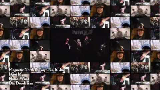 | 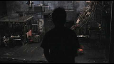 | ||
| Movie Trailers | 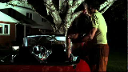 | 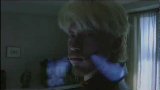 | 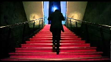 | |
| Martial Arts Featurettes | 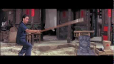 | 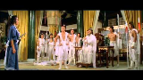 | ||
| Japanese Animation Projects | 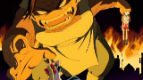 | |||
| Just-for-Fun Videos | 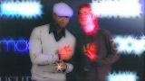 | 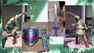 |